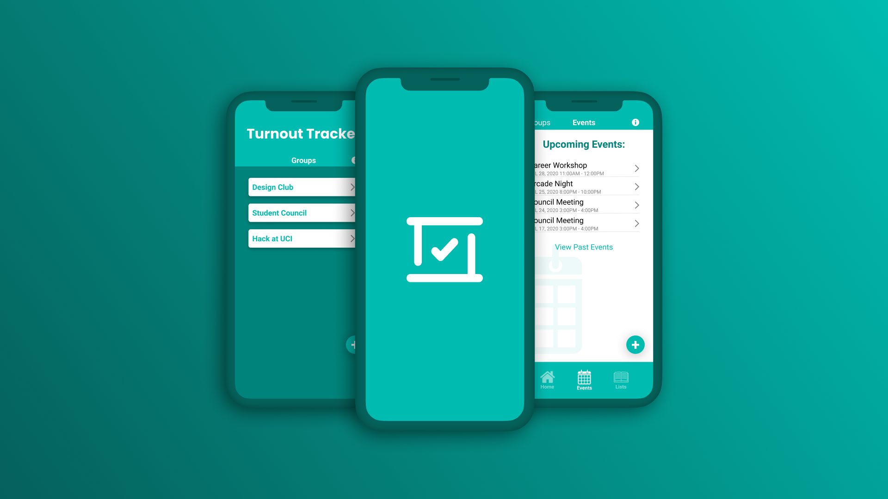
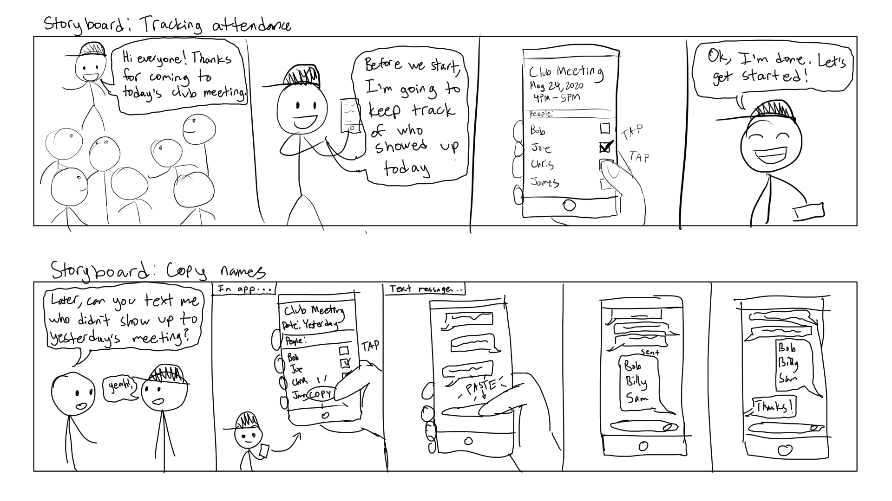
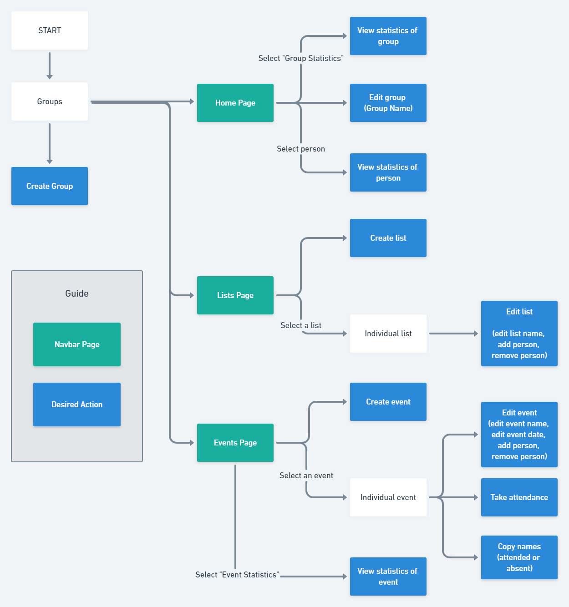
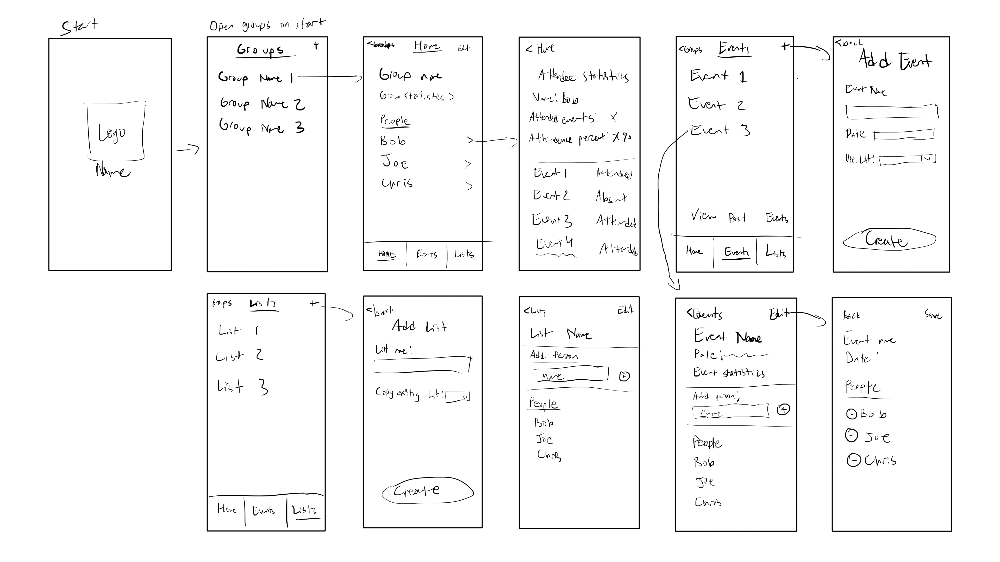
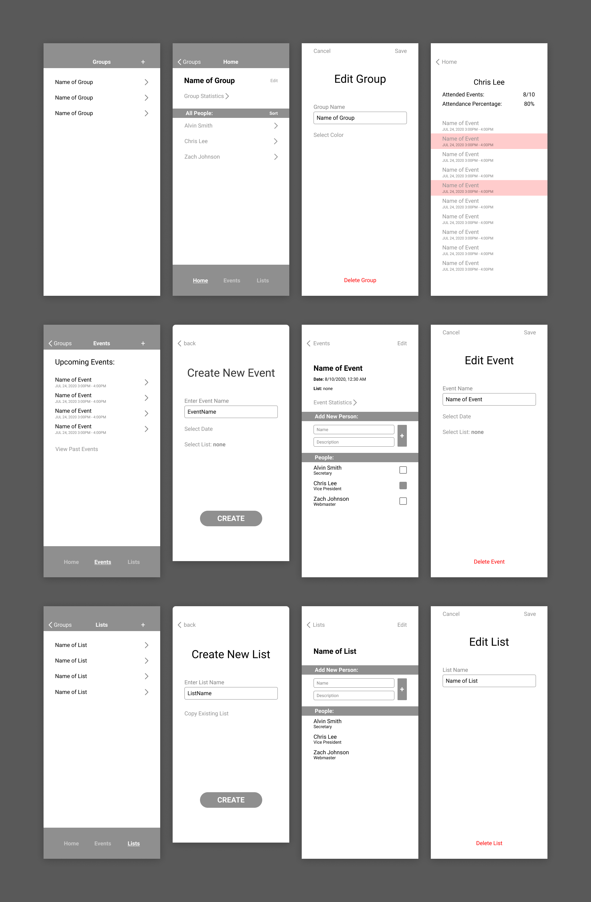
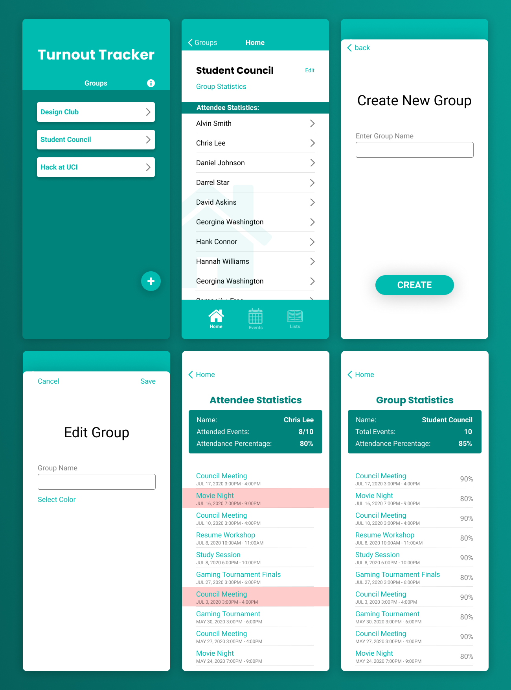
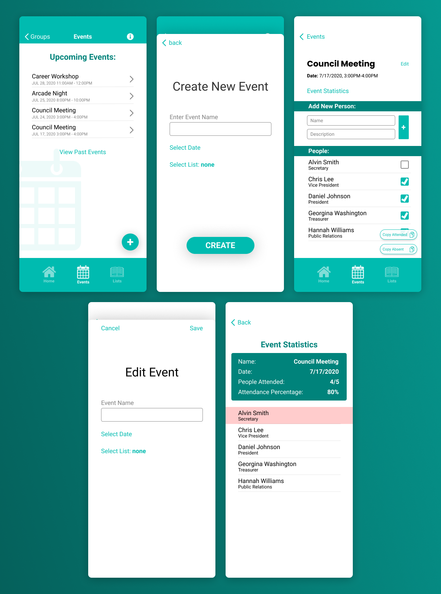
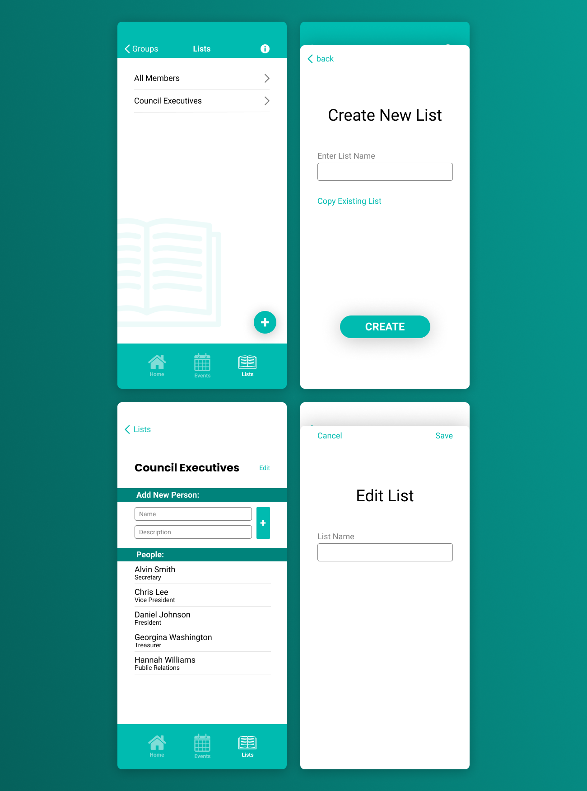

Tracking attendance made easier.

Role: UI/UX Designer
Partner:
Stephen Boussarov (Programmer)
Duration: July 2020, 3 weeks
Turnout Tracker is a mobile application that can be used to track attendance during meetings. In addition, the app allows a user to view attendance statistics with ease, such as: who attended an event, who was absent, the percentage of events a person has attended, and more. I was responsible for research and design for the application. Stephen worked as a developer and programmed the application with Swift for iOS. We worked closely with each other throughout the development process to finalize decisions for the application.
Through our experiences in school and club activities, we realized that many users do not have an efficient method of keeping track of attendance for their meetings and events. The process of keeping attendance for recurring meetings, and recording the data from attendance to generate statistics, was repetitive, tedious, and unreliable.
Interviews:
In order to gather qualitative data for the application, I conducted user interviews. I reached out to people who I knew that had experience with keeping track of attendance and scheduled virtual interviews with them. I wanted to gather insight on what people use for tracking attendance, their reasons for doing so, and their opinions on the attendance tracking process.
🙂 User Interview 1:
- Took attendance for in-person events for a school volunteer club.
- Would take attendance by passing around a piece of paper to attendees, and have them write their name.
- After the event, somebody would have to input information from the attendance sheet into an Excel sheet on their computer. This required that they find and read every single name listed on the paper, and then input it into Excel.
🙂 User Interview 2:
- Takes attendance as an instructor for online courses. Keeps track of who shows up to Zoom meetings.
- There is an automated record of who shows up on the call, but it is very inaccurate. Sometimes the instructor doesn’t show up in the record, and some people who didn’t attend somehow show up in the record.
- The user texts the names of students who do not show up in their work chat. Wants to follow up on students and their parents if the student doesn’t show up to classes.
🙂 User Interview 3:
- Took attendance for fraternity meetings.
- While at an event, the user types the names of people that are there using a writing app on their phone.
- Takes into account who has arrived, but not who is expected to arrive and has not yet. The user is forced to use deduction to figure out who isn't at an event.
- The user used their phone because of the convenience: no need to prepare anything beforehand, they only need their phone.
- After the event, goes to their computer to record all the names into an excel sheet.
The process of routinely keeping attendance is a repetitive and tedious process. It often requires users to transfer information between different mediums (paper, phone, computer). As a result, this becomes unnecessarily time-consuming, and potentially unreliable.
The app must reduce the repetition of the attendance-keeping process, and not force the user to repeat the same actions if they have recurring events. Therefore, it should allow the user to re-use a list of attendees so that they do not have to copy every attendee's name for every event.
The process of calculating statistics from attendance should be automated. Such statistics include: how many events an attendee has gone to or missed and the percentage of event attendance per event.
Use Cases:
“Everybody just showed up to today’s event, and I need to take attendance”
“My club is going to have recurring meetings, so I need to keep track of attendance weekly”
“I want to see how many people were expected to show up today, but didn’t”
“The club secretary needs a list of people who didn’t show up to the meeting”
“I want to check how our club’s attendance was this year”
Storyboarding:

User Flow:



Interactive Prototype:
Turnout Tracker uses a system of Groups, Lists, and Events to make taking attendance an intuitive and convenient process. All designs were created with Figma.
Groups:
A group can represent an organization, club, or team. Groups are separate entities, and each contain their own Home, Events, and Lists.
Home:
The home page of a group contains cumulative data for all attendees involved in a group. When tapping on an attendee, a user can view data about what events they have attended/missed.

Events:
A user can create an event to keep track of attendance. The user simply has to check off an attendee's name to mark them as "attended". In addition, a user can copy a list of people who have attended or are absent with the press of a button.

Lists:
The purpose of lists are to make the attendance tracking process more convenient. Instead of having to re-type attendee names for recurring events, a user is able to re-use a list of names.

What I learned:
The value of user perspectives: This is the first time that I have reached out to others for user interviews. This experience has helped me understand the importance of qualitative data for research. Learning about users and their pain points when tracking attendance was extremely valuable, and contributed to the creation of certain features on Turnout Tracker.
Constraints by design: Turnout Tracker was programmed with Swift, a programming language specifically designed for Apple devices. This language has its own set of tools called SwiftUI, which standardize the user interface of all iOS applications. As a result, there are limitations to how applications with SwiftUI can be designed. I had to learn how to understand the developer’s perspective when designing, and make sure that my designs could be recreated using Swift.
Communication is key: My partner and I frequently made calls in order to strategize certain decisions for the application. Frequent communication made the design process more efficient, as I could get an immediate discussion about key design decisions for the application.
What I can do next time:
Interviewing: For this project, I independently reached out to people to conduct 1-on-1 interviews. However, I realized that I was taking notes during the interview, which could be detrimental. In the future, I should either have another person with me to take notes during the interview, or record the interview and take notes after it is finished. This way, the interview is not disrupted and the interviewee will feel more comfortable.
User Testing: User testing during the design process could help discover problems with my design. It is always important to get more user perspectives when designing. In the future, I hope to incorporate user testing and rapid prototyping in my design process.